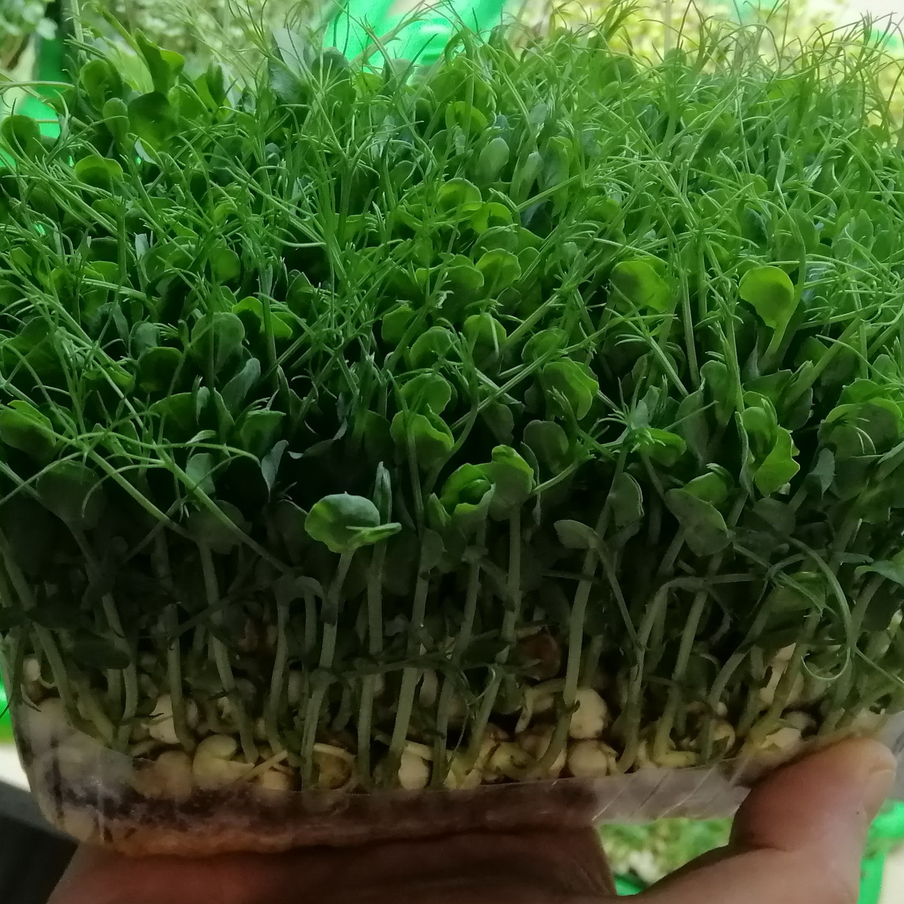
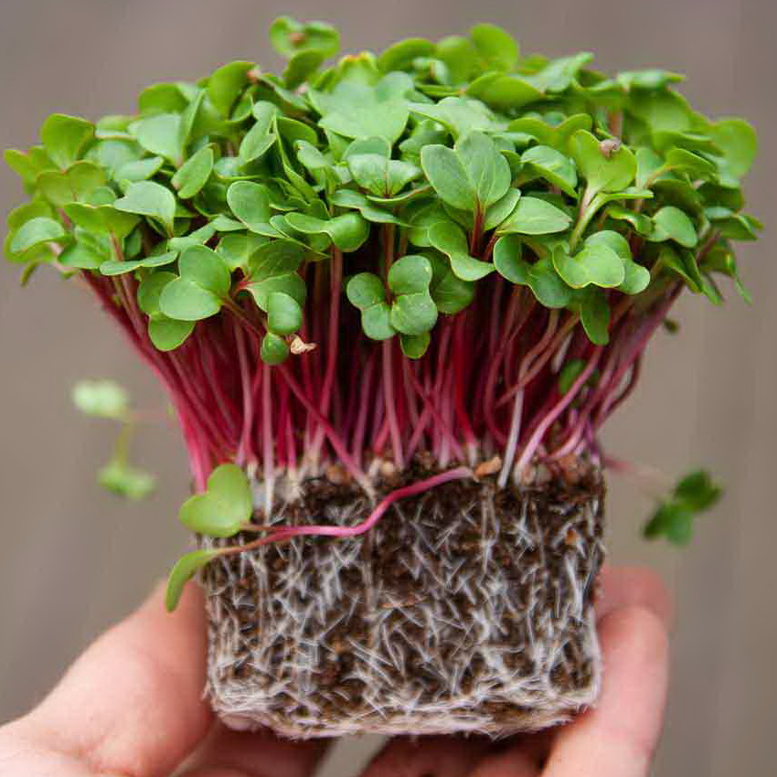
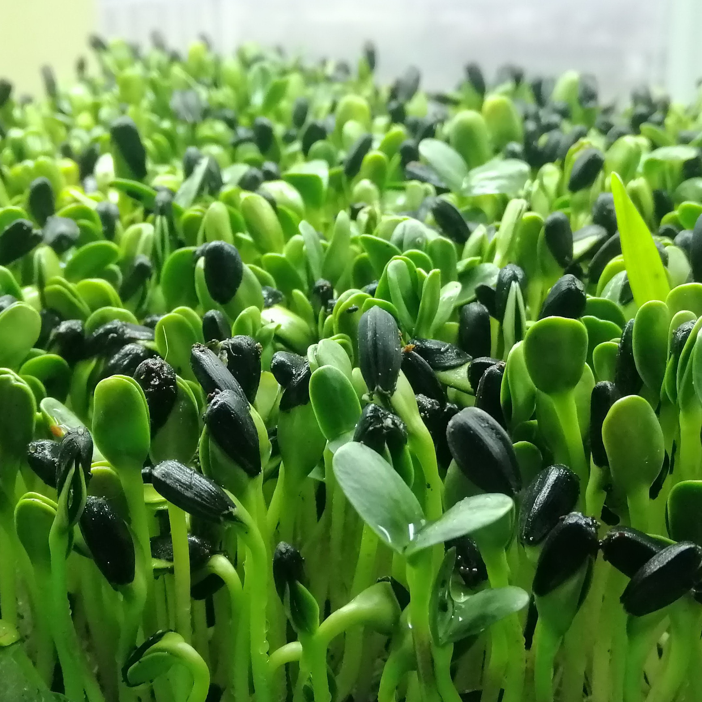

Швидке замовлення
-

Мікрозелень Горошка
Мікрогрін зеленого горошку є максимально корисним продуктом, з розряду суперфудів. Зелені паростки допомагають якісно очистити організм від шлаків та токсинів, вивести усі забруднення природним шляхом..
Детальніше... -

Мікрозелень Редиски
Рослина з трохи пекучим пікантним смаком, ідеальна приправа до салатів та м'ясних страв. У складі редиски – мінерали, мікроелементи та ефірні олії, завдяки чому покращується травлення. Має протинабрякову дію
Детальніше... -

Мікрозелень Соняшник
У складі – йод, фосфор, магній, кальцій, цинк та залізо, а також вітаміни E та K, фолієва кислота. Соняшник бореться з болями в суглобах та корисний для кислотно-лужного балансу. Подається до м'ясних та овочевих страв.
Детальніше...
Цікаво знати
-
01

Рецепти страв із мікрозеленню
-
02
Що в середені мікрозелені
-
03
Як зростити мікрозелень в себе в дома
-
04
Матеріали для вирощування